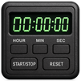

スマートツール・コネクト
ブログ
運営者情報
プライバシーポリシー
お問い合わせ
ツールリクエスト
計算ツール
関数電卓
基本演算に加え、括弧、三角関数（sin, cos, tan）、
自然対数（ln）、常用対数（log）、平方根（√）、
べき乗（^）、定数π、定数eを実装。
現在の式とリアルタイム計算結果を同時に表示。
進数変換ツール
2進数、10進数、16進数、ASCIIを相互にリアルタイム変換可能。
コンデンサ容量計算
静電容量値を表す3桁の数字を入力することで、
3種類の単位で容量値をリアルタイム算出、
末尾のアルファベット入力で誤差も表示。
抵抗値計算
抵抗値を表す3桁または4桁のEIAコードを入力することで、
抵抗値をリアルタイム算出。
時計ツール
デジタル時計
日付、曜日と時刻を表示するデジタル時計、
PinP機能付き。
アナログ時計
日付、曜日と時刻を表示するデジタル時計、
PinP機能付き。
ストップウォッチ
ラップ機能付きのシンプルなストップウォッチ。

タイマー
時、分、秒をカスタム設定、
繰り返し、アラーム設定可能。
ポモドーロタイマー
25分作業＋5分休憩のサイクルで生産性向上、
PinP機能付き、サイクル切り替え時のアラーム付き。
メトロノーム
タップテンポ、プリセットBPM、音量調整、
音色の選択が可能。
リラクゼーション
低音強調ピンクノイズ
低音強調のピンクノイズで周囲の雑音をマスキング、
ランダムゆらぎでリラックス感UP、
ホワイトノイズより耳に優しく、長時間聞いても疲れにくい。
瞑想リラックス音楽
アルファ波促進のリラックス音楽、
432Hz、528Hz、10Hzバイノーラルビートを使用、
ストレス軽減、心の安定に効果的。
各ツールはすべて無料でご利用いただけます。今後も便利なツールを随時追加予定です。ご意見・ご要望はお問い合わせページよりお知らせください。